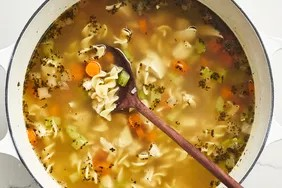

Chicken Noodle Soup

Description
Whether you're feeling under the weather
or you're just in need of a little comfort,
there's nothing like homemade chicken noodle
soup to warm you up from the inside out.
With this shortcut recipe,
you can have the best chicken noodle soup
of your life on the table in just 40 minutes.
Ingredients
- Onions and Celery
- Broth
- Chicken
- Noodles
- Carrots
- Basil and Oregano
Steps
- Melt butter in a large pot over medium heat. Add onion and celery and cook until tender.
- Add chicken broth, vegetable broth, chicken, egg noodles, carrots, basil, oregano, salt and pepper. Stir together to combine and bring to boil.
- Reduce the heat and let it simmer for 20 minutes.